原文出处:本文由博客园博主Snow~Forever提供。
原文连接:https://www.cnblogs.com/cc299/p/10693508.html
原文连接:https://www.cnblogs.com/cc299/p/10693508.html
1. 下载windbg并安装。
我下载的是 Windbg 6.12。注意，windbg分32位和64位，由分析环境的位数决定。我这里安装的是32位的。安装过程很简单，一路next就可以。
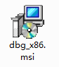
2. 准备被调试的程序。
新建一个C#控制台程序，使用如下代码。编译~


class Program
{
static void Main(string[] args)
{
TestClass tref = new TestClass();
Console.ReadKey();
}
}
public class TestClass
{
public int A = 7;
public byte B = 1;
public int C = 8;
public byte D = 2;
public byte E = 3;
public byte F = 4;
public int G = 9;
}3. 到bin/debug目录下，运行创建的程序
4. 打开Windbg。
初次使用，需要加载符号文件。选择菜单： File - Symbol File Path，输入：
srv*d:\SymbolsLocal*http://msdl.microsoft.com/download/symbols
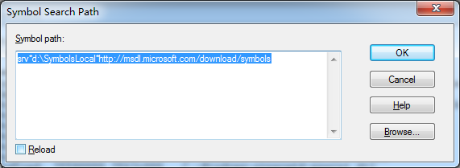
5. 附件到进程
选择 File - Attach to a process，然后在弹出的窗口中选择我们正在运行的控制台程序
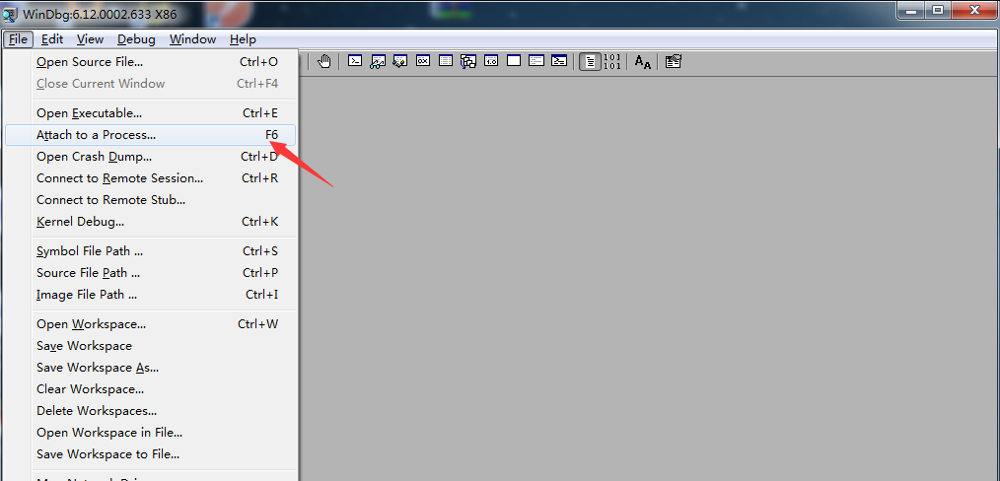
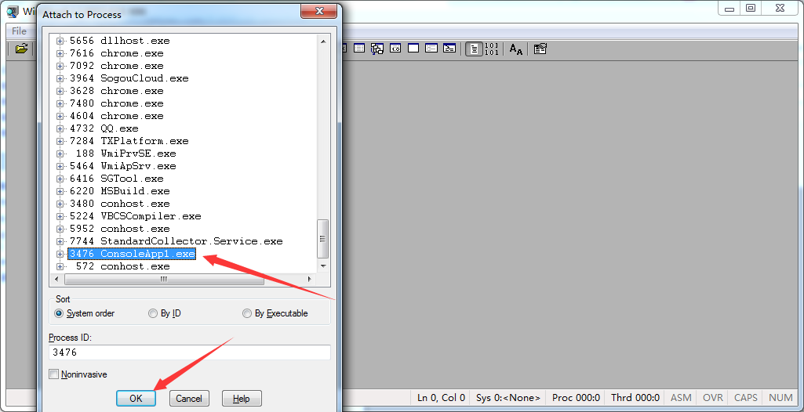
6. 加载 sos 工具
如下图。然后输入 .chain，用于确认sos.dll确实被加载。
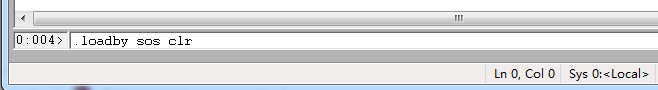
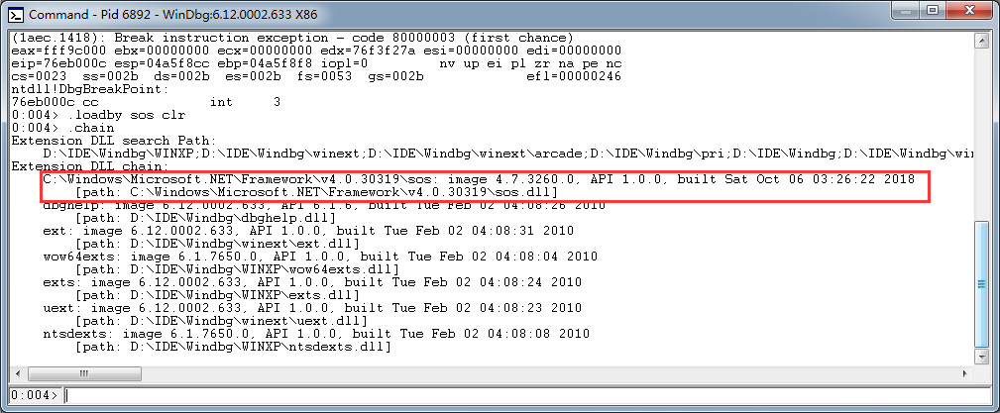
7. 获得主线程上的引用
输入命令： ~0s
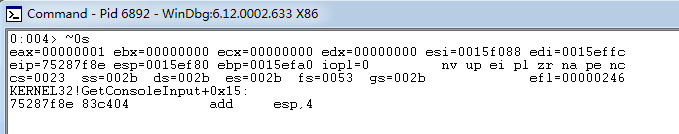
8. 输出主线程上的线程栈信息
输入命令 !clsstack -l 。可以看到，main方法有一个局部变量，地址是 0x020c2350
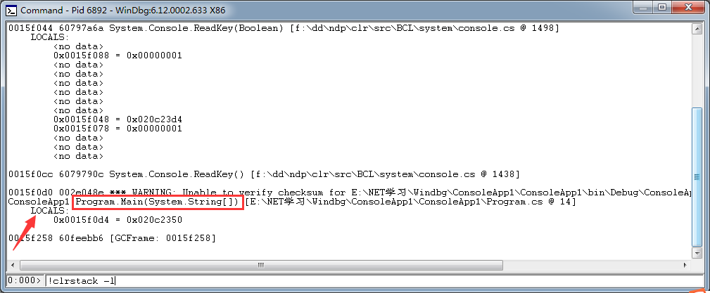
9. 输出局部变量的信息
!dumpobj /d 0x020c2350 。如下图
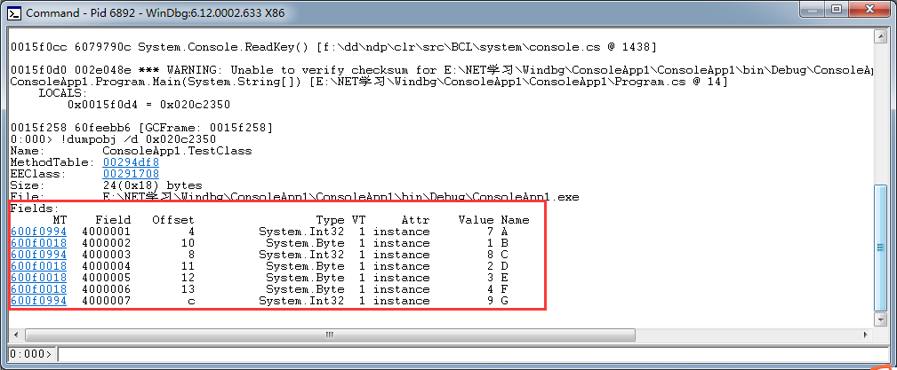
打印出来的内容：
Name：类名
MethodTable：方法表地址
Size：占用内存空间多少字节
红色框里，是该对象所有字段的详细信息表格，包含每个字段的MT（方法表地址）、Offset（相对偏移量）、类型、VT（=1：值类型，=0：引用类型）、Attr（静态的还是实例的）、字段值、字段名称
注意，在offset中，可以看到每个字段在内存的分布，如下图。
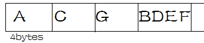
这么分布是为了字段对齐。即，CLR为了节省空间，各个字段在内存中，并不是按代码定义的顺序进行分布的，而是把byte字段合到一起，让它们共同占用4个字节。int每个变量占4个字节。就形成了上图的分布。
10. 查看内存情况
选择菜单 View - Memory，在Virtual中输入刚才变量地址，可以验证上面所说的情况
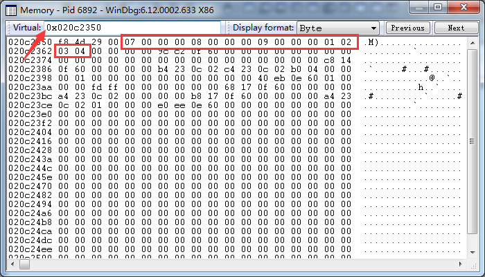